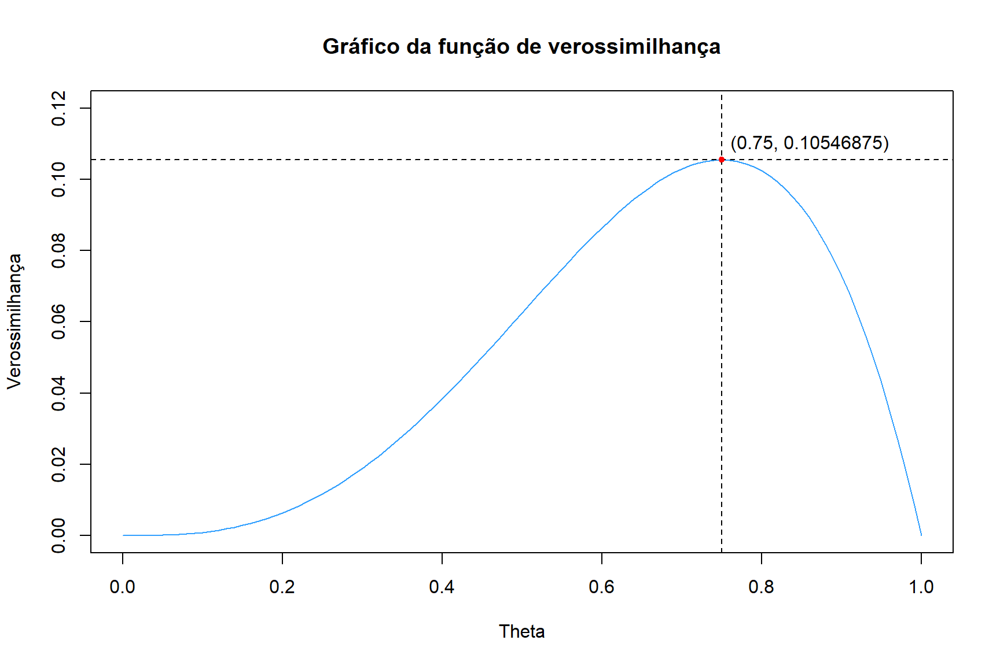
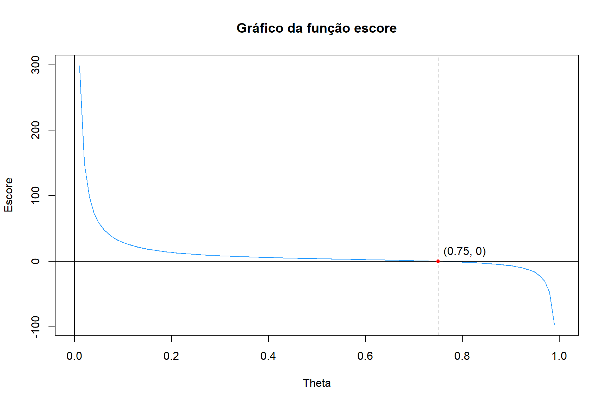

vero <- function(theta) theta^3*(1-theta)
escore <- function(theta) (3 - 4*theta)/(theta*(1 - theta))Introdução
Neste post, iremos conhecer sobre o conceito de função de verossimilhança, um tema de extrema importância dentro inferência estatística. Discutiremos sobre algumas de suas utilizações e realizaremos exemplos práticos e computacionais que nos permitam absorver melhor as ideias que aqui forem abordadas. Para começo de conversa, quando estudamos a Teoria das Probabilidades, nos habituamos a ter um conhecimento prévio sobre a distribuição de probabilidade que uma determinada variável aleatória segue, podendo, assim, obter respostas para os possíveis eventos que podem vir a acontecer em relação a essa variável. Em situações cotidianas, entretanto, pode ser extremamente difícil de se obter precisamente as distribuições de probabilidade de certas variáveis aleatórias. Na maior parte dos casos, o melhor que podemos fazer é obter uma amostra da população que queremos estudar, e, a partir dessa amostra, inferenciar sobre a população em questão. Temos aqui uma mudança de perspectiva: se antes estávamos interessados em calcular a probabilidade de uma variável aleatória assumir um certo valor, dado que ela segue uma certa distribuição de probabilidade, agora queremos estudar sobre como deve ser essa distribuição de probabilidade, dado que observamos certos valores dessa variável aleatória na amostra.
Assim, comecemos por uma definição: considere \(f_{\mathbf{X}}(\mathbf{x}|\theta)\) como sendo a função densidade conjunta (no caso contínuo) ou a função de probabilidade conjunta (no caso discreto) de \(n\) variáveis aleatórias. Definimos a função de verossimilhança \(L(\theta|\mathbf{x})\) como sendo a função densidade (ou de probabilidade) conjunta dessas \(n\) variáveis aleatórias vista como função de \(\theta\), ou seja, considerando como fixos os valores de \(X_1,\;X_2,\;...,\;X_n\) e variando o valor do parâmetro \(\theta\) (ou valores, caso \(\theta\) seja um vetor de parâmetros). Em outras palavras, temos que
\[ L(\theta|\mathbf{x}) = f_{\mathbf{X}}(\mathbf{x}|\theta) \]
Apesar de, à primeira vista, a definição acima parecer ser simplesmente uma diferença de notação, a função de verossimilhança e a função densidade (ou de probabilidade) conjunta apresentam distinções importantíssimas. Em primeiro lugar, algo a se notar é que a função de verossimilhança, por ser uma função de \(\theta\), pode ser contínua em um certo intervalo mesmo que \(f_{\mathbf{X}}(\mathbf{x}|\theta)\) seja uma função de probabilidade conjunta (ou seja, mesmo que as variáveis aleatórias que fazem parte da amostra sejam discretas). Basta que \(\theta\) assuma valores de forma contínua em um dado intervalo. Além disso, é preciso deixar claro que a função de verossimilhança não é uma função densidade (ou de probabilidade) em relação a \(\theta\), pois sua integral (ou soma) em todo o espaço paramétrico (conjunto de todos os possíveis valores que o parâmetro pode assumir) não necessariamente é igual a 1, propriedade que deve ser cumprida para que uma função seja considerada uma função densidade de probabilidade ou uma função de probabilidade. Dessa forma, o valor obtido através da função de verossimilhança não pode ser considerado como uma densidade de probabilidade ou uma probabilidade em relação a \(\theta\). De fato, chamamos, pásmem, de verossimilhança o valor obtido por meio dessa função. Mas, afinal… o que seria, então, essa verossimilhança?
Entendendo a verossimilhança
Para explicar o que é, de fato, a verossimilhança, precisamos definir dois cenários diferentes. Para o primeiro caso, o caso discreto, considere uma amostra aleatória \((X_1,\;X_2,\;X_3,\;X_4)\) na qual todas as variáveis seguem uma distribuição \(Bernoulli(\theta)\), onde \(\theta\) é a probabilidade de sucesso, variando no intervalo \([0,\;1]\). Suponha que os valores observados de \((X_1,\;X_2,\;X_3,\;X_4)\) tenham sido \(x_1 = 0,\;x_2 = 1,\;x_3 = 1\) e \(x_4 = 1\), e que queremos decidir entre duas hipóteses: a hipótese \(A\), na qual o verdadeiro valor do parâmetro seria \(\theta = 0,5\), e a hipótese \(B\), na qual o valor de \(\theta\) seria 0,8. Por se tratar de uma amostra aleatória, consideramos que todas as variáveis são independentes e identicamente distribuídas (i.i.d.). Dessa forma, a função de probabilidade conjunta pode ser escrita como sendo o produtório das funções de probabilidade marginais (é de extrema importância lembrar que essa afirmação é válida se, e somente se, as variáveis aleatórias em questão são independentes). Assim, para \(x \in \{0,\;1\}\), temos:
\[ \begin{align} f(\mathbf{x}|\theta) &= \prod_{i = 1}^4 \theta^{x_i} (1 - \theta)^{1 - x_i} \\ &= \theta^{\sum_{i = 1}^4 x_i}(1 - \theta)^{4 - \sum_{i = 1}^4 x_i} \end{align} \]
Sendo \(\sum_{i = 1}^4 x_i = 0 + 1 + 1 + 1 = 3\),
\[ \begin{align} f(\mathbf{x}|\theta) &= \theta^{3}(1 - \theta)^{4 - 3} \\ &= \theta^{3}(1 - \theta) \end{align} \]
Assim, \(L(\theta|\mathbf{x}) = \theta^{3}(1 - \theta)\), para \(0 \leqslant \theta \leqslant 1\). Note que, como \(f_{\mathbf{X}}(\mathbf{x}|\theta)\) é uma função de probabilidade conjunta e, portanto, está limitada ao intervalo \([0,\;1]\), a função de verossimilhança também estará limitada a esse intervalo. Antes de continuarmos a resolução do exemplo, podemos ilustrar que, como dito na seção anterior, a integral da função de verossimilhança em todo o seu domínio não necessariamente deve ser igual a 1. Observe os cálculos abaixo.
\[ \begin{align} \int_0^1 \theta^3(1 - \theta) d\theta = \int_0^1 \theta^3 - \theta^4 = \left(\frac{\theta^4}{4} - \frac{\theta^5}{5}\right) \Bigg\rvert_0^1 = \frac{1}{4} - \frac{1}{5} = \frac{1}{20} \end{align} \]
Dessa forma, reforçando, \(L(\theta|\mathbf{x})\) não pode ser considerada uma função densidade de probabilidade em relação a \(\theta\). Voltando ao exemplo, queríamos decidir entre as hipóteses \(A\), na qual \(\theta = 0,5\), e \(B\), na qual \(\theta = 0,8\). No primeiro caso, o valor da verossimilhança seria dado por:
\[ \begin{align} L(0,5|\mathbf{x}) & = 0,5^3(1 - 0,5) \\ & = 0,125(0,5) \\ & = 0,0625 \end{align} \]
Já no segundo caso,
\[ \begin{align} L(0,8|\mathbf{x}) & = 0,8^3(1 - 0,8) \\ & = 0,512(0,2) \\ & = 0,1024 \end{align} \]
Quanto à interpretação dos resultados, não podemos dizer, de forma alguma, que a verossimilhança indica que a probabilidade do verdadeiro valor de \(\theta\) ser 0,5 é de 0,0625, ou que a probabilidade de \(\theta\) ser 0,8 é de 0,1024. O valor da verossimilhança, quando \(\mathbf{X}\) é discreto, deve ser interpretado como sendo a probabilidade de observarmos os valores da amostra caso o verdadeiro valor do parâmetro seja o valor testado. Assim, a verossimilhança seria uma probabilidade em relação a X, e não em relação a \(\theta\). Com isso, como 0,1024 > 0,0625, concluímos que a amostra em questão tem uma maior chance de ser observada quando \(\theta = 0,8\), e, portanto, a hipótese \(B\) é mais verossímil do que a hipótese \(A\). Podemos ainda definir a razão de verossimilhança, dada por \[ \frac{L(B|\mathbf{x})}{L(A|\mathbf{x})}, \]
como sendo uma forma de medir a força de evidência em favor da hipótese \(B\) sobre a hipótese \(A\). Nesse exemplo, temos que
\[ \frac{L(B|\mathbf{x})}{L(A|\mathbf{x})} = \frac{0,1024}{0,0625} = 1,6384. \] Assim, podemos dizer que a observação da amostra obtida é evidência de que a hipótese \(B\) é aproximadamente 1,64 vezes mais verossímil do que a hipótese \(A\).
Analogamente, caso \((X_1,\;X_2,\;...,\;X_n)\) fosse uma amostra de variáveis aleatórias que seguem uma distribuição contínua, teríamos que \(f_\mathbf{X}(\mathbf{x}|\theta)\) seria uma função densidade conjunta, e que, por estar definida em \([0, \infty)\), assim o estaria a função de verossimilhança. O valor da verossimilhança, nesse cenário, indicaria a densidade de probabilidade da amostra observada caso o verdadeiro valor de \(\theta\) fosse o valor testado. Novamente, a densidade de probabilidade é em relação a X, e não em relação a \(\theta\). De qualquer forma, encontrar o valor de \(\theta\) que maximiza uma função de verossimilhança aparenta ser um bom caminho para estimar o verdadeiro valor do parâmetro de uma distribuição de probabilidade. E é exatamente sobre isso que discutiremos na próxima seção.
Estimação de parâmetros pelo método da máxima verossimilhança
No ramo da inferência estatística, um dos métodos mais conhecidos e dominantes de se estimar um parâmetro de uma certa distribuição de probabilidade, dado os valores observados em uma amostra, é o chamado método da máxima verossimilhança. A ideia principal desse método consiste em maximizar o valor da função de verossimilhança, para que assim a probabilidade de a amostra observada ocorrer seja a maior possível. Dessa forma, sendo \(L(\theta|\mathbf{x})\) a função de verossimilhança das variáveis aleatórias \(X_1,\;X_2,\;...,\;X_n\), chamamos de estimador de máxima verossimilhança e denotamos por \(\hat{\theta}\), sendo \(\hat{\theta}(X_1,\;X_2,\;...,\;X_n)\) (ou seja, uma função das variáveis aleatórias), o valor de \(\theta\) que, entre todo o espaço paramétrico, maximiza \(L(\theta|\mathbf{x})\). Quando substituídos os valores observados de \(X_1,\;X_2,\;...,\;X_n\), obtemos a chamada estimativa de máxima verossimilhança para \(\theta\).
Para maximizar a função de verossimilhança, buscaremos auxílio no Cálculo. Respeitadas algumas condições, temos que o estimador de máxima verossimilhança é a solução da equação
\[ \frac{dL(\theta|\mathbf{x})}{d\theta} = 0. \] Para que as explicações acima fiquem mais claras, passemos para um exemplo. Considere que \((X_1,\;X_2,\;...,\,X_n)\) é uma amostra aleatória de uma distribuição \(Bernoulli(\theta)\). De forma semelhante ao que vimos na seção anterior, podemos escrever a função de probabilidade conjunta dessas variáveis, para \(x \in \{0,\;1\}\) como sendo
\[ \begin{align} f_\mathbf{X}(\mathbf{x}|\theta) &= \prod_{i = 1}^n \theta^{x_i}(1 - \theta)^{1 - x_i} \\ &= \theta^{\sum_{i = 1}^n x_i}(1 - \theta)^{n - \sum_{i = 1}^n x_i} \end{align} \] Logo, \(L(\theta|\mathbf{x}) = \theta^{\sum_{i = 1}^n x_i}(1 - \theta)^{n - \sum_{i = 1}^n x_i}\) para \(0 \leqslant \theta \leqslant 1\). Para encontrarmos o estimador de máxima verossimilhança de \(\theta\), precisamos derivar a função \(L(\theta|\mathbf{x})\) em relação a \(\theta\) e igualar o resultado a zero. Note, entretanto, que na maioria dos casos é consideravelmente mais fácil encontrar a derivada do logaritmo da função de verossimilhança do que a derivada da função de verossimilhança propriamente dita. E como a função logarítmica é estritamente crescente, maximizar a função de verossimilhança é o equivalente a maximizar a função de log-verossimilhança. Para não causar maiores confusões, denotaremos essa última por \(l(\theta|\mathbf{x})\), sendo \(l(\theta|\mathbf{x}) = \log\left[L(\theta|\mathbf{x})\right]\). Assim, temos:
\[ \begin{align} l(\theta|\mathbf{x}) &= \log\left[\theta^{\sum_{i = 1}^n x_i}(1 - \theta)^{n - \sum_{i = 1}^n x_i}\right] \\ &= \log\left(\theta^{\sum_{i = 1}^n x_i}\right) + \log\left[(1 - \theta)^{n - \sum_{i = 1}^n x_i}\right] \\ &= \sum_{i = 1}^n x_i\log(\theta) + \left(n - \sum_{i = 1}^n x_i\right)\log(1 - \theta) \end{align} \] Calculando a derivada em relação a \(\theta\),
\[ \begin{align} \frac{d\;l(\theta|\mathbf{x})}{d\theta} &= \frac{\sum_{i = 1}^n x_i}{\theta} - \frac{n - \sum_{i = 1}^n x_i}{1 - \theta} \\ &= \frac{(1 - \theta)\sum_{i = 1}^n x_i - \theta\left(n - \sum_{i = 1}^n x_i\right)}{\theta(1 - \theta)} \\ &= \frac{\sum_{i = 1}^n x_i - \theta\sum_{i = 1}^n x_i - n\theta + \theta\sum_{i = 1}^n x_i}{\theta(1 - \theta)} \\ &= \frac{\sum_{i = 1}^n x_i - n\theta}{\theta(1 - \theta)} \end{align} \] O resultado acima - a derivada da função de log-verossimilhança - recebe um nome especial: a chamamos de função escore, denotada por \(s(\theta)\). Igualando-a a zero, temos:
\[ \begin{align} \frac{\sum_{i = 1}^n x_i - n\theta}{\theta(1 - \theta)} = 0 \quad & \rightarrow\quad \sum_{i = 1}^n x_i - n\theta = 0 \\ & \rightarrow\quad \hat{\theta} = \frac{\sum_{i = 1}^n x_i}{n} \end{align} \]
Logo, o estimador de máxima verossimilhança para \(\theta\) de uma amostra aleatória com distribuição \(Bernoulli(\theta)\) é \(\hat{\theta} = \bar{X}\), ou seja, a média amostral. Aplicando esse resultado no exemplo discutido na seção anterior, no qual \(n = 4\) e \(x_1 = 0,\;x_2 = 1,\;x_3 = 1\) e \(x_4 = 1\), temos:
\[ \begin{align} \hat{\theta} = \frac{\sum_{i = 1}^4 x_i}{4} = \frac{0 + 1 + 1 + 1}{4} = \frac{3}{4} = 0,75 \end{align} \] Assim, a estimativa de máxima verossimilhança para \(\theta\) é de 0,75. Ou seja, a maior probabilidade de observarmos a amostra em questão ocorre quando o valor do parâmetro populacional é 0,75. Nesse ponto, a verossimilhança é dada por
\[ \begin{align} L(0,75|\mathbf{x}) & = (0,75)^3(1 - 0,75) \\ & = 0,421875(0,25) \\ & = 0,10546875 \end{align} \] Note que, como esperado, o valor acima é maior que o valor encontrado para a verossimilhança quando \(\theta = 0,8\), calculado anteriormente. Assim, podemos considerar que uma hipótese \(C\), que diz que o verdadeiro valor do parâmetro é 0,75, é a hipótese mais verossímil para explicar o comportamento de \(\theta\). Muito importante: isso não significa que o verdadeiro valor do parâmetro é, de fato, 0,75. Estamos apenas adotando esse valor como uma estimativa desse parâmetro, uma vez que, pelo método da máxima verossimilhança, ele é o valor que melhor explica a amostra obtida.
Para concluir, podemos utilizar o R para criar os gráficos das funções de verossimilhança e escore do exemplo acima, para assim termos uma melhor visualização dos resultados obtidos. Definindo as funções, temos:
Para plotarmos os gráficos, utilizaremos a função curve, do pacote básico graphics, a qual desenhará uma curva para a função especificada em um dado intervalo. Para ambas as funções que queremos plotar, como \(0 \leqslant \theta \leqslant 1\), não precisaremos especificar o intervalo que curve utilizará, uma vez que \([0,\;1]\) é o intervalo padrão dessa função. Com a função abline, traçaremos linhas verticais e horizontais nas coordenadas especificadas, utilizando o argumento lty para especificar se a linha deve ser completa (lty = 1) ou tracejada (lty = 2). Com a função points, adicionaremos ao gráfico pontos nas coordenadas especificadas, utilizando o argumento pch para definir seu formato. Por fim, com a função text, adicionaremos textos ao gráfico, nas coordenadas escolhidas, por meio do argumento labels. Todas as funções aqui utilizadas pertencem ao pacote básico graphics. Para a função de verossimilhança, temos:
curve(expr = vero,
main = "Gráfico da função de verossimilhança",
xlab = "Theta", ylab = "Verossimilhança",
col = "#32A0FF",
ylim = c(0, 0.12))
abline(v = 0.75, h = 0.10546875, lty = 2)
points(x = 0.75, y = 0.10546875, col = "red", pch = 20)
text(x = 0.86, y = 0.11, labels = c("(0.75, 0.10546875)"))
Observe que, de fato, a função de verossimilhança em questão possui um ponto de máximo absoluto em \(\theta = 0,75\). Já quanto à função escore,
curve(expr = escore,
main = "Gráfico da função escore",
xlab = "Theta", ylab = "Escore",
col = "#32A0FF")
abline(v = c(0, 0.75), h = 0, lty = c(1, 1, 2))
points(x = 0.75, y = 0, col = "red", pch = 20)
text(x = 0.805, y = 15, labels = c("(0.75, 0)"))
Note que, como esperado, o gráfico da função escore intercepta o eixo \(x\) apenas no ponto \(\theta = 0,75\), o qual, como visto acima, é um ponto de máximo da função de verossimilhança. Dessa forma, podemos observar que os cálculos feitos ao longo do post estão de acordo com as representações visuais das funções envolvidas.
Conclusão
Ao longo desse post, discutimos sobre os conceitos de verossimilhança e função de verossimilhança, demonstrando algumas de suas utilizações dentro da Estatística. Algo que aqui não foi discutido, muito por conta da falta de conhecimento do autor sobre o assunto até o presente momento, é o papel da função de verossimilhança dentro da inferência Bayesiana. Mas isso é papo para outra hora. De qualquer forma, esperamos que as definições e os exemplos aqui apresentados tenham ficado claros, de forma que o leitor tenha conseguido adquirir algum conhecimento sobre essa temática. Para comentários, sugestões e colaborações científicas, entre em contato conosco através do email observatorioobstetricobr@gmail.com.
Referências
https://fsbmat-ufv.github.io/blog_posts/14-08-2019/post1
https://en.wikipedia.org/wiki/Likelihood_function
https://online.stat.psu.edu/stat415/lesson/1/1.2
MOOD, Alexander McFarlane. Introduction to the theory of statistics. 3. ed. EUA: McGraw-Hill Education, 1974. 480 p.
No matching items
Citation
BibTeX citation:
@online{sant'ana herzog2022,
author = {Sant’Ana Herzog, Rafael},
title = {Função de Verossimilhança},
date = {2022-03-15},
url = {https://rafaherzog.github.io/rafasantanah/posts/2022-03-15-funcao-de-verossimilhanca/},
langid = {en}
}
For attribution, please cite this work as:
Sant’Ana Herzog, Rafael. 2022. “Função de Verossimilhança.”
March 15, 2022. https://rafaherzog.github.io/rafasantanah/posts/2022-03-15-funcao-de-verossimilhanca/.